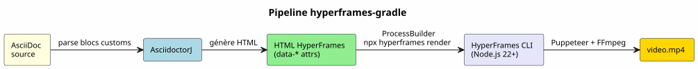

HyperFrames-Gradle : Transformer l'AsciiDoc en Vidéo MP4
Publié le 31 May 2026
Il y a deux semaines, j’ai lancé capsule-gradle — un plugin qui transforme un deck
reveal.js en capsule vidéo WebM avec TTS. Aujourd’hui, j’ajoute un nouveau plugin :
hyperframes-gradle. Il fait quelque chose que capsule-gradle ne fait pas :
transformer l’AsciiDoc directement en vidéo MP4, sans passer par reveal.js.
Voici pourquoi ce plugin existe, comment il s’articule avec l’existant, et ce que le moteur HyperFrames de HeyGen apporte au pipeline de production de contenu.
1. Le Trou dans le Pipeline Vidéo
Mon pipeline documentaire produit deux types de vidéos :
-
Capsule de révision (capsule-gradle) — un deck reveal.js capturé en WebM avec narration TTS. Parfait pour revoir un module.
-
Slides d’animation (slider-gradle) — un deck reveal.js HTML interactif pour le formateur en présentiel.
Mais il manque un troisième format : la vidéo standalone.
| Use case | Solution actuelle | Manque |
|---|---|---|
Slides formateur |
slider-gradle → reveal.js |
✅ |
Capsule révision |
capsule-gradle → WebM |
✅ |
Vidéo teasing |
Aucune |
❌ |
Démo technique animée |
Aucune |
❌ |
Doc-to-video |
Aucune |
❌ |
Le premier use case est critique : comment générer automatiquement une vidéo de 60 secondes qui présente un projet ou un module, avec animations GSAP, narration TTS, et fond musical — le tout depuis le même fichier AsciiDoc que les slides ?
Capsule-gradle ne peut pas répondre : il lui faut déjà un deck reveal.js. slider-gradle produit bien ce deck, mais il n’est pas conçu pour le rendu vidéo. Il fallait un pipeline direct : AsciiDoc → vidéo.
2. HyperFrames : Le Moteur
J’ai découvert HyperFrames il y a quelques jours. C’est un framework open-source (Apache 2.0) créé par HeyGen, la licorne de la vidéo IA. 22 700 étoiles sur GitHub. Le pitch tient en une phrase :
Write HTML. Render video. Built for agents.
Le principe : vous écrivez du HTML avec des data-* attributes, vous référencez
une animation GSAP (ou CSS, Lottie, Three.js…), et le moteur rend le tout en MP4
via Puppeteer (headless Chrome) + FFmpeg. Résultat déterministe : même input,
mêmes frames, même vidéo.
<div id="stage" data-composition-id="intro" data-start="0" data-width="1920" data-height="1080">
<video class="clip" data-start="0" data-duration="6" data-track-index="0"
src="background.mp4" muted playsinline></video>
<h1 id="title" class="clip" data-start="1" data-duration="4" data-track-index="1">
Formation Docker & Kubernetes
</h1>
<audio data-start="0" data-duration="6" data-track-index="2"
data-volume="0.3" src="music.wav"></audio>
<script src="https://cdn.jsdelivr.net/npm/gsap@3/dist/gsap.min.js"></script>
<script>
const tl = gsap.timeline({ paused: true });
tl.from("#title", { opacity: 0, y: 40, duration: 0.8 }, 1);
window.__timelines = window.__timelines || {};
window.__timelines.intro = tl;
</script>
</div>Qu’est-ce qui rend HyperFrames différent de Remotion ? Pas de React, pas de bundler, pas de JSX. Du HTML brut que les agents IA savent écrire nativement. C’est taillé exactement pour mon pipeline : planner-gradle avec deepseek peut générer ce HTML à partir d’un plan SPG/SPD, et un plugin Gradle peut le convertir en MP4.
3. L’Architecture du Plugin
hyperframes-gradle suit le même pattern que tous mes plugins : le pattern « Plugin Indépendant + Racine Consommateur ».
hyperframes-gradle/
├── settings.gradle.kts ← racine consommateur (dogfood)
├── build.gradle.kts ← 3 lignes : apply plugin hyperframes
├── hyperframes-plugin/ ← BUILD INDÉPENDANT
│ ├── gradlew ← son propre wrapper
│ ├── build.gradle.kts ← java-gradle-plugin
│ ├── src/main/kotlin/education/cccp/hyperframes/
│ │ ├── HyperframesPlugin.kt
│ │ ├── GenerateHyperframesHtmlTask.kt
│ │ ├── RenderHyperframesTask.kt
│ │ └── HyperframesExtension.kt
│ ├── .agents/ ← gouvernance agent
│ └── doc/
│ └── HYPERFRAMES_ARCHITECTURE.adoc
└── video.yml ← configuration dogfood3.1. Le Pipeline en Quatre Étapes

-
AsciidoctorJ parse l’AsciiDoc source et extrait les blocs customs
[hyperframes-composition],[hyperframes-track],[hyperframes-animation]. -
GenerateHyperframesHtmlTask génère le HTML HyperFrames avec les
data-*attributes correspondants. -
RenderHyperframesTask appelle la CLI HyperFrames via
ProcessBuilder:npx hyperframes render --input index.html --output video.mp4. -
Le MP4 est déployé dans
output/avec unmetadata.jsonpour l’orchestration.
3.2. Le DSL AsciiDoc
La vraie valeur ajoutée du plugin, c’est le DSL AsciiDoc. L’utilisateur n’écrit jamais de HTML. Il annote son document AsciiDoc existant :
= Formation Docker & Kubernetes
:hyperframes-width: 1920
:hyperframes-height: 1080
:hyperframes-fps: 30
[hyperframes-composition, id="intro"]
== Introduction
Le titre apparaît avec un fondu GSAP sur fond vidéo.
[hyperframes-track, index=0, start=0, duration=6]
video::assets/background.mp4[muted, playsinline]
[hyperframes-track, index=1, start=1, duration=4]
Formation Docker & Kubernetes
[hyperframes-animation, type=gsap]const tl = gsap.timeline({ paused: true }); tl.from("#title", { opacity: 0, y: 40, duration: 0.8 }, 1); window.timelines = window.timelines || {}; window.__timelines.intro = tl;
Les attributs docinfo (:hyperframes-width:) configurent les dimensions.
Les blocs customs définissent les compositions et les tracks. Le bloc
[hyperframes-animation] contient le code GSAP brut — que l’agent IA
peut générer à partir d’une description en langage naturel.
3.3. Le Bridge Node.js
Le seul point de friction technique : HyperFrames est en Node.js/TypeScript,
et mes plugins sont en Kotlin/JVM. La solution est un ProcessBuilder :
class RenderHyperframesTask : DefaultTask() {
@TaskAction
fun render() {
val process = ProcessBuilder(
"npx", "hyperframes", "render",
"--input", inputHtml.absolutePath,
"--output", outputMp4.absolutePath
)
.inheritIO()
.start()
val exitCode = process.waitFor()
require(exitCode == 0) {
"HyperFrames render failed with exit code $exitCode"
}
}
}Zéro couplage code JVM ↔ Node.js. Le contrat est par ligne de commande
et fichiers sur disque. C’est le même pattern que plantuml-gradle
(qui appelle la CLI PlantUML) ou slider-gradle (qui appelle AsciidoctorJ).
Rien de nouveau sous le soleil — juste appliqué à un outil plus récent.
4. Deux Plugins Vidéo, Deux Usages
| capsule-gradle | hyperframes-gradle | |
|---|---|---|
Source |
Deck reveal.js (HTML existant) |
AsciiDoc → HTML HyperFrames |
Use case |
Capsule de révision |
Vidéo standalone explicative |
Nature |
Slides → vidéo |
Document → vidéo |
Rendu |
Playwright Java → WebM |
HyperFrames CLI → MP4 |
Animation |
Transitions reveal.js natives |
GSAP/CSS data-attributes |
Stack |
100% JVM (Kotlin) |
JVM + Node.js CLI externe |
Ils ne se remplacent pas. Ils se complètent. La chaîne de valeur complète :
AsciiDoc ──→ slider-gradle ──→ deck reveal.js ──→ capsule-gradle ──→ WebM
(capsule révision)
AsciiDoc ──→ hyperframes-gradle ──→ MP4
(vidéo standalone)
L’utilisateur écrit un seul fichier AsciiDoc. slider-gradle produit les slides. capsule-gradle produit la capsule de révision. hyperframes-gradle produit la vidéo de teasing et les démos techniques.
5. Les 6 EPICs de la Roadmap
Le plugin est structuré en 6 EPICs :
| EPIC | Description | Priorité |
|---|---|---|
HF-0 |
Bootstrap gouvernance + cadrage architecture |
✅ TERMINE |
HF-1 |
Plugin Gradle stub + AsciidoctorJ intégration |
P0 |
HF-2 |
Bridge CLI HyperFrames (ProcessBuilder → npx → MP4) |
P1 |
HF-3 |
DSL AsciiDoc customs (blocs, docinfo, templates) |
P1 |
HF-4 |
Intégration runner-gradle (metadata.json) |
P2 |
HF-5 |
Templates prêts à l’emploi (title-card, code-diff, captions) |
P3 |
HF-6 |
CI + publication Maven Central / Gradle Portal |
P3 |
La session 000 (bootstrap) est déjà terminée. La session 001 attaquera HF-1 : le stub du plugin Gradle et l’intégration AsciidoctorJ.
6. Pourquoi Ça Marche
Trois raisons :
-
HyperFrames est "built for agents". Mon pipeline repose sur des agents IA (planner-gradle + deepseek) qui génèrent du contenu. HyperFrames accepte du HTML brut — le format que les LLMs maîtrisent le mieux. Pas de React, pas de JSX, pas de courbe d’apprentissage pour l’agent.
-
Le DSL AsciiDoc est naturel. Tout mon écosystème parle AsciiDoc. slider-gradle, codex-gradle, training-gradle — tous consomment du
.adoc. Ajouter des blocs customs[hyperframes-composition]est une extension logique, pas une rupture. -
Le bridge Node.js est un pattern éprouvé. ProcessBuilder hors de la JVM, c’est ce que je fais déjà pour PlantUML, Graphviz, Piper. Ajouter HyperFrames ne change rien à l’architecture — c’est un outil externe de plus, piloté depuis Gradle.
|
La vraie force du pattern, c’est qu’il n’y a aucune dépendance npm dans le build Gradle. Le plugin n’importe pas de code Node.js. Il exécute une commande shell. Si HyperFrames évolue ou casse, le plugin n’est pas couplé — il suffit de mettre à jour la commande. |
7. Conclusion : Le Chaînon Manquant
Avec hyperframes-gradle, mon pipeline vidéo est complet. J’ai :
-
Les slides interactives (slider-gradle)
-
Les capsules de révision (capsule-gradle)
-
Les vidéos standalone (hyperframes-gradle)
Trois formats. Un seul fichier source : l’AsciiDoc.
Le prochain objectif est HF-1 : faire compiler le plugin et générer un premier HTML HyperFrames à partir d’un document AsciiDoc annoté. La session 001 est déjà cadrée.
hyperframes-gradle existe. La gouvernance est en place. Le backlog est écrit. L’architecture est documentée. Le plugin est né.
8. Références
-
Article 0124 — L’Architecture Plugin Indépendant + Racine Consommateur
-
foundry/public/hyperframes-gradle/hyperframes-plugin/doc/HYPERFRAMES_ARCHITECTURE.adoc— Architecture détaillée